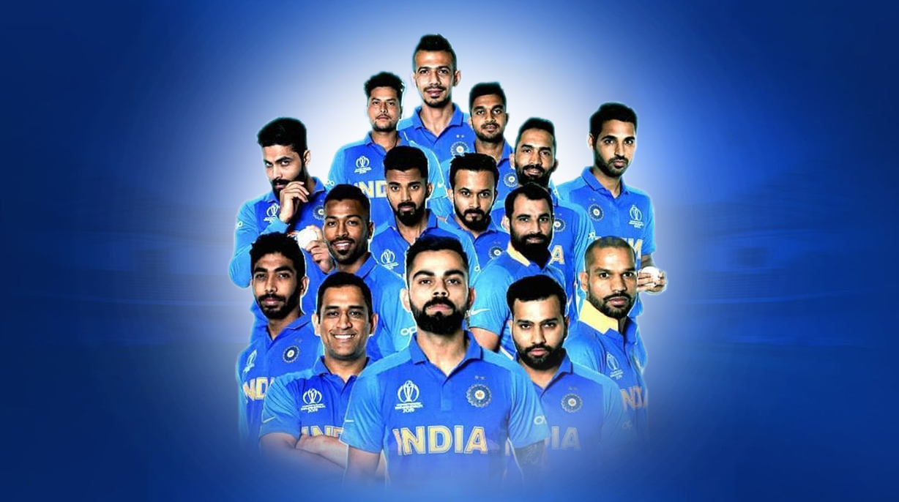

Cricket in India
Cricket is the most popular sport in India by far, and is played almost everywhere.[^1^][1] The Indian national cricket team won the 1983 Cricket World Cup, the 2007 ICC World Twenty20, the 2011 Cricket World Cup, the 2013 ICC Champions Trophy, and shared the 2002 ICC Champions Trophy with Sri Lanka.[^2^][2]
The Board of Control for Cricket in India (BCCI) is the governing body for the Indian cricket team and first-class cricket in India. The BCCI organises the Indian Premier League (IPL), a Twenty20 competition, which is also one of the biggest sports leagues in the world.
Some of the most famous and successful Indian cricketers are Sachin Tendulkar, Rahul Dravid, Sourav Ganguly, Anil Kumble, Kapil Dev, Sunil Gavaskar, Virat Kohli, Mahendra Singh Dhoni, and Rohit Sharma.